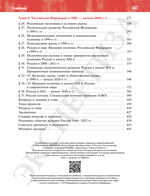
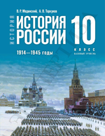

15 августа 2026
Почему «Мединский.нет»
О названии сайта и о том, что мы понимаем под антимифами к единому учебнику.
Читать записьПостраничный разбор учебников
Антимифы к единому учебнику. Проверяем избыточные победы.
Мы читаем школьные учебники истории страницу за страницей и выносим на поля то, что написал бы внимательный преподаватель: где факт передёрнут, где оценка выдана за установленный факт, а где о важном просто умолчали. Замечания стоят прямо на развороте — у того места, к которому относятся.
Это не фигура речи и не оценка «в целом». Мы прочли книгу страницу за страницей и обнаружили, что она собрана из небольшого набора повторяющихся приёмов. Их шесть. Мы разобрали 84 страницы, на них 225 замечаний — и практически на каждой работает хотя бы один приём, а обычно два или три сразу.
Седьмой цвет, серый, — не приём. Им помечено то, что мы просто добавляем от себя: недостающий контекст или исправление прямой ошибки. Таких замечаний примерно каждое восьмое, и мы намеренно не смешиваем их с остальными — чтобы счёт был честным.
Каждое замечание привязано к своему месту на странице и по возможности снабжено ссылкой на источник. Проверяйте.
15 августа 2026
О названии сайта и о том, что мы понимаем под антимифами к единому учебнику.
Читать запись
225 замечаний на 84 страницах
Учебник по истории России для 11 класса. Освещает события от 1945 года до начала XXI века.
Открыть разбор
Разбор ещё готовится
Учебник по истории России для 10 класса. Освещает события 1914—1945 годов: Первая мировая война, революция и Гражданская война, СССР в 1920—1930-е гг., Великая Отечественная война.
Смотреть страницыЦвет кружка на странице — это приём, а не важность замечания. Тот же цвет стоит у номера в списке под сканом.
Размер кружка по-прежнему показывает вес замечания: крупный — разбор фрагмента, мелкий — уточнение к детали.
Наведите курсор на кружок — разбор появится прямо поверх страницы; щелчок закрепит его. Под сканом те же замечания идут списком, по порядку, — так разбор страницы можно прочитать подряд.
У каждой страницы учебника свой адрес вида /medinsky11klass/pages/17/ — такую ссылку удобно давать в споре, чтобы собеседник открыл ровно тот же разворот. Листать можно ссылками «вперёд» и «назад» внизу страницы или из оглавления учебника.
Чтобы читать, не нужно ни регистрироваться, ни входить: здесь нет ни счётчиков, ни аналитики, ни рекламы — мы не следим за тем, кто какую страницу открыл. Страницы, текст и замечания — обычные файлы, лежащие рядом: браузер скачивает их ровно так же, как картинки на любом другом сайте, и ничего больше никуда не отправляет. К нашему API — тому, через который разбор редактируется, — просмотрщик не обращается вовсе.
Поэтому сайт не привязан к нашему серверу: он одинаково работает из любой папки. Архив с полной копией разбора, который можно положить на флешку и читать без интернета, мы сейчас готовим.